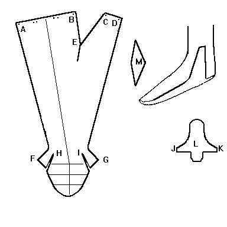

The sides AF and DG are joined, starting at the heel. If Joining two hosen together, the area BE is the front and is where the cod-piece is inserted. Gusset M should be sewn into the cut-out area M. The sole L should be sewn in turnsole fashion, with a rand, with the gussets J and K sewn into H and I. The holes at the waistline, are holes through which to insert the pointes into the pourpoint. It is probably for the best if the fabric is bias-cut, to help with stretching. The waistline is situated at the hip level for the early period, but had raised to the true waist line by the late 15th century. You may also want to see "Footed Hose".